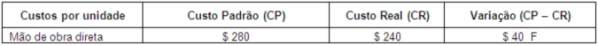
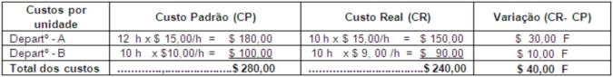
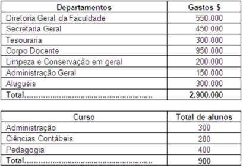
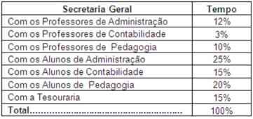
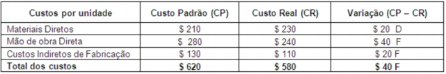
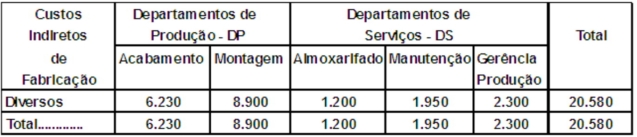
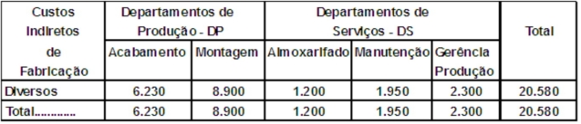
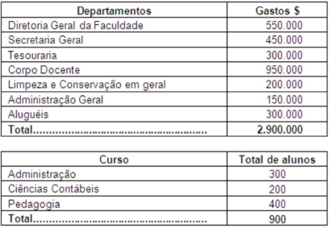
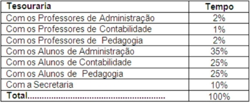

CLIENTES - POLOS

Tenha acesso a provas sem fazer precisar fazer login. Para ter acesso a centenas de simulados de provas para estudar, tudo de forma rápida, simples e segura, faça o login com seu RA e senha. SAIBA MAIS
Disciplina: 623340 - ANÁLISE DE CUSTOS
Questão 1: Considerar os dados sobre a mão de obra direta nos dois quadros a seguir:   Analise as situações que podem explicar as variações ocorridas no departamento A: I -A redução na quantidade de horas foi provocada pela manutenção semanal das máquinas. II -O ganho na variação deverá ser repassado aos empregados. III -A taxa prevista foi realizada, o que significa que o orçamento foi cumprido. IV -A variação favorável apurada poderá reduzir o preço de venda. Podemos afirmar que: A) Todas as afirmativas estão corretas. B) Somente a afirmativa II está incorreta. C) As afirmativas II e IV estão incorretas. D) Somente a afirmativa IV está correta. E) Somente a afirmativa II está correta.
Questão 2: Uma determinada faculdade oferece três cursos: Administração, Ciências Contábeis e Pedagogia. As informações levantadas no último ano sobre os gastos e o número de alunos por curso foram:  Outras informações: ▪ Considerando um superávit de 15%, a mensalidade cobrada por aluno no último ano foi de:R$ 2.900.000 /900 alunos = Custo anual de R$ 3.222,22 por aluno.Valor anual cobrado do aluno = R$ 3.222,22 x 1,15 = R$ 3.705,55Valor mensal cobrado do aluno = R$ 3.705,55 / 12 meses = R$ 308,80 ▪ A responsável pela direção da faculdade, a Sra. Gilda (Professora Doutora na área Pedagógicacom especialidade em Administração Escolar), não concorda com uma mensalidade única, porque para ela os cursos possuemgastos diferentes. Por esse motivo ela contrata uma consultoria, que recomenda a aplicação do Custeio Baseado em Atividades -ABC. Os levantamentos feitos pela consultoria informam que o tempo gasto pela secretaria geral é de aproximadamente:  Sendo assim, podemos afirmar que o gasto da secretaria geral com o curso de Administração é de: A) R$ 54.000 B) R$ 112.500 C) R$ 97.500 D) R$ 166.500 E) R$ 113.450
Questão 3: Uma determinada faculdade oferece três cursos: Administração, Ciências Contábeis e Pedagogia. As informações levantadas no último ano sobre os gastos e o número de alunos por curso foram:
 Outras informações:
▪ Considerando um superávit de 15%, a mensalidade cobrada por aluno no último ano foi de:R$ 2.900.000 / 900 alunos = Custo anual de R$ 3.222,22 por aluno.Valor anual cobrado do aluno = R$ 3.222,22 x 1,15 = R$ 3.705,55Valor mensal cobrado do aluno = R$ 3.705,55 / 12 meses = R$ 308,80
▪ A responsável pela direção da faculdade, a Sra. Gilda (Professora Doutora na área Pedagógicacom especialidade em Administração Escolar), não concorda com uma mensalidade única, porque para ela os cursos possuemgastos diferentes. Por esse motivo ela contrata uma consultoria, que recomenda a aplicação do Custeio Baseado em Atividades -ABC. Os levantamentos feitos pela consultoria informam que o tempo gasto pela secretaria geral é de aproximadamente:
Sendo assim, podemos afirmar que o gasto da secretaria geral com o curso de Ciências Contábeis é de:
A) R$ 67.500
B) R$ 135.000
C) R$ 81.000
D) R$ 100.000
E) R$ 108.300
Outras informações:
▪ Considerando um superávit de 15%, a mensalidade cobrada por aluno no último ano foi de:R$ 2.900.000 / 900 alunos = Custo anual de R$ 3.222,22 por aluno.Valor anual cobrado do aluno = R$ 3.222,22 x 1,15 = R$ 3.705,55Valor mensal cobrado do aluno = R$ 3.705,55 / 12 meses = R$ 308,80
▪ A responsável pela direção da faculdade, a Sra. Gilda (Professora Doutora na área Pedagógicacom especialidade em Administração Escolar), não concorda com uma mensalidade única, porque para ela os cursos possuemgastos diferentes. Por esse motivo ela contrata uma consultoria, que recomenda a aplicação do Custeio Baseado em Atividades -ABC. Os levantamentos feitos pela consultoria informam que o tempo gasto pela secretaria geral é de aproximadamente:
Sendo assim, podemos afirmar que o gasto da secretaria geral com o curso de Ciências Contábeis é de:
A) R$ 67.500
B) R$ 135.000
C) R$ 81.000
D) R$ 100.000
E) R$ 108.300
Questão 4: Considere os dados a seguir: Após analisar o quadro, podemos afirmar que: A) Somente a variação dos materiais diretos deve ser investigada. B) É impossível ocorrer uma variação favorável para os custos indiretos de fabricação, o custo padrão deverá ser refeito. C) A variação favorável da mão de obra direta pode contribuir para o aumento do prêmio de produção. D) A variação dos custos indiretos de fabricação anulam aquela dos materiais diretos, logo o problema está na mão de obra direta. E) A variação total foi favorável, portanto, não há nada a se fazer.
Questão 5: O Custeio Baseado em Atividades -ABC, em termos gerais, considera: A) A classificação dos gastos em custos e despesas. B) A importância de conhecer o gasto efetivo sobre determinado produto, ou seja, a melhor maneira de ratear os custos indiretos aos produtos. C) Que independentemente de onde vem o gasto, sendo relacionado com o produto, seu valor deve ser apurado e agregado ao mesmo. D) Uma nova maneira de mensurar os custos diretos. E) O valor exato dos custos indiretos de fabricação ocorridos no período.
Questão 6: AAlguns termos técnicos são próprios do Custeio Baseado em Atividades -ABC, como os direcionadores, por exemplo. Sendo assim, podemos afirmar que a função dos direcionadores é: A) Informar o valor de cada etapa do processo industrial. B) Determinar o número de ocorrências de uma determinada atividade. C) Apontar os gastos ocorridos na área administrativa. D) Investigar a procedência dos gastos no período em questão. E) Exigir da alta direção a eliminação de todas as atividades do processo.
Questão 7: Considere os dados a seguir:  Sabe-se que os custos da gerência de produção são transferidos igualmente para os DPs e que a manutenção durante o mês serviu apenas a montagem. Considerando os departamentos da direita para a esquerda para fins de transferências, podemos afirmar que o total dos custos dos DPs ficarão em: A) R$ 8.900 B) R$ 15.130 C) R$ 12.000 D) R$ 20.580 E) R$ 19.380
Questão 8: Considere os dados a seguir:  Sabe-se que os custos da gerência de produção são transferidos igualmente para os DPs e que a manutenção durante o mês serviu apenas a montagem. Considerando os departamentos da direita para a esquerda para fins de transferências, podemos afirmar que os custos dos departamentospassarão respectivamente para: A) Zero,zero,R$ 1.200, R$ 12.000 e R$ 7.380 B) R$ 2.300, R$ 1950, R$ 1.200, R$8.900 e R$ 6.230 C) Zero,R$ 1.950, R$ 1.200, R$8.900 eR$ 6.230 D) R$ 2.300, zero,R$ 1.200, R$8.900 eR$ 6.230 E) Zero,zero,R$ 1.200, R$ 11.025 e R$ 8.355
Questão 9: Uma determinada faculdade oferece três cursos: Administração, Ciências Contábeis e Pedagogia. As informações levantadas no último ano sobre os gastos ocorridos e o número de alunos por curso foram:   Outras informações: ▪ Considerando um superávit de 15%, a mensalidade cobrada por aluno no último ano foi de:R$ 2.900.000 / 900 alunos = Custo anual de R$ 3.222,22 por aluno.Valor anual cobrado do aluno = R$ 3.222,22 x 1,15 = R$ 3.705,55Valor mensal cobrado do aluno = R$ 3.705,55 / 12 meses = R$ 308,80 ▪ A responsável pela direção da faculdade, a Sra. Gilda (Professora Doutora na área Pedagógicacom especialidade em Administração Escolar), não concorda com uma mensalidade única, porque para ela os cursos possuemgastos diferentes. Por esse motivo ela contrata uma consultoria, que recomenda a aplicação do Custeio Baseado em Atividades -ABC. Os levantamentos feitos pela Consultoria informam que o tempo gasto pela tesouraria é de aproximadamente:  Sendo assim, podemos afirmar que o gasto da tesouraria com o curso de Ciências Contábeis é de: A) R$ 78.000 B) R$ 111.000 C) R$ 100.000 D) R$ 105.000 E) R$ 81.000
Questão 10:A classificação dos departamentos em produção e serviços favorece: A) Conhecer os custos diretos por departamento. B) Relacionar os custos dos departamentos com os produtos. C) A transferência dos custos dos departamentos de produção para os de serviços. D) A implantação de um único critério de rateio para os custos indiretos de fabricação. E) A decisão em apropriar o gasto com o aluguel somente para a área administrativa.
O Gerenciador completo do seu Polo
Se existe algo que tira a paciência e o sono de qualquer gestor em um negócio, é a demora para obter respostas que deveriam estar disponíveis rapidamente para auxiliar não somente em tomada de decisões como em ações comerciais que tragam dinheiro para a empresa.
Saiba mais
Rua Júlio Câmara, 706 - Anexo 1 - Centro, Afogados da Ingazeira - PE, 56800-000